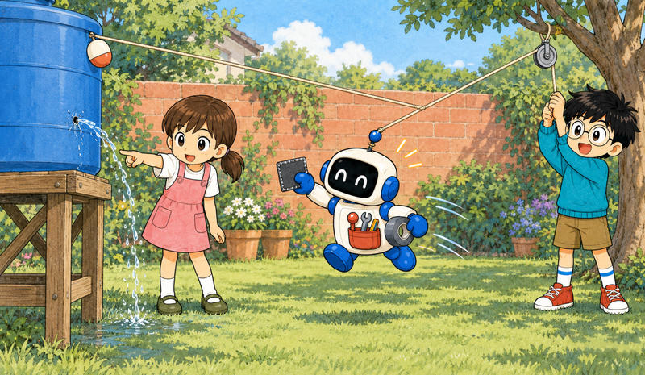
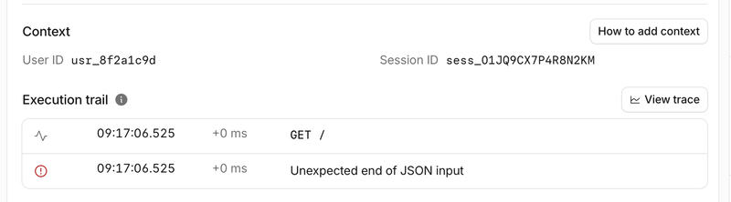

Feature 11 · ARTICLE · 2026 09
Detect and send production issues straight to your agent
As agents help us build more complex applications, humans and agents both need a better way to stay on top of what goes wrong in production. Coding agents can already query observability data, change code, write tests, and open a pull request. What remains manual is connecting those steps. Today we’re introducing Issues, built-in error monitoring for Cloudflare Workers, now in open beta. It groups repeated failures into one issue, sends the error and its context to a configured coding agent, and triggers that agent’s workflow, from triage to a pull request.

Catch failures automatically

One line of configuration turns it on. Issues is built into the Workers runtime, so there is no SDK to install or wrapper to add.
Issues records uncaught exceptions, failed invocations, HTTP 5xx responses, output from console.log() and console.error(), and logs that contain a stack trace. It also flags runaway alarm conditions and code that writes large volumes of logs inside loops.
Suppose a handler starts throwing after a deployment. Every failed request has a different request ID, but they all come from the same bug. Issues groups them and shows when the error first appeared, how often it has happened, and whether it is becoming more frequent. An issue shows the error, a stack trace when available, the logs and traces leading up to it, the Worker version, request details, and the trend over time.
Contextualizing errors for your agent

Cloudflare can capture what happened inside the Worker, but it doesn’t know which users, accounts, or sessions matter to your application. The runtime’s built-in OpenTelemetry API lets you add those identifiers without installing another package:
import { tracing } from "cloudflare:workers";
export default {
async fetch(request: Request): Promise<Response> {
const { userId, accountId, sessionId } = await getAuthDetails(request);
const span = tracing.getActiveSpan();
span?.setAttribute("user.id", userId);
span?.setAttribute("account.id", accountId);
span?.setAttribute("session.id", sessionId);
return handleRequest(request);
},
} satisfies ExportedHandler;
The identifiers appear with each occurrence, so you can see whether failures are concentrated in one account or session before sending the issue to an agent.
Send detected issues to your agent
![Diagram of five numbered boxes in a row. Under Production: 1, Production Worker, an exception, 5xx, or error log occurs. Under Cloudflare Automation: 2, Detect and group, related failures become one issue with diagnostic context; 3, Route the issue, use an automation trigger or send it manually to a configured destination. Under Agent-assisted: 4, Investigate, the coding agent proposes changes to code and tests and opens a pull request, with an optional link to Cloudflare MCP. Under Human control: 5, Review and deploy, your team reviews the proposal and decides what reaches production.](../../img/eb58b6240d23b8a2-1999.jpg)
Configure an automation once. When an issue crosses an occurrence threshold or returns after a quiet period, Issues sends it to:
Built-in coding agents: Claude Code, Cursor, or Devin.
Generic webhooks: your own agent or HTTPS endpoint.
Chat and incident management: your team or an on-call workflow.
The payload carries the exception, the source-mapped stack trace, leading and trailing logs and traces, the Worker version, and the application context you added. For deeper investigation, you can connect the agent separately to Cloudflare MCP, which lets it query related logs and traces so it can propose code and test changes and open a pull request.
You stay in control of what reaches production: review the pull request, deploy the fix, and mark the issue resolved.
Two Workflows bugs in one day
Cloudflare Workflows is built entirely on Workers, which made it a useful place to test Issues on our own production systems. Within a day of turning it on, the team found two unusual problems hidden inside a large volume of traffic:
A migration stuck in a retry loop: a control plane migration repeatedly hit a SQLite foreign key error in an edge case.
A deletion that never completed: in an edge case, deleting Workflow instances could exceed a Workers subrequest limit and stop short.
The automation sent both issues directly to Cloudflare OS, which followed the errors into the Workflows code and proposed a fix for each. The team didn’t have to connect thousands of separate pieces of telemetry and user reports by hand.
Get started
Set
observability.issues.enabledtotrueinwrangler.jsonc.Set up your first automation in the Cloudflare dashboard, pointing it at an agent, a webhook, an incident tool, or a chat platform.
If your agent is handling setup, it can use the new cf CLI to inspect issues and create automations.